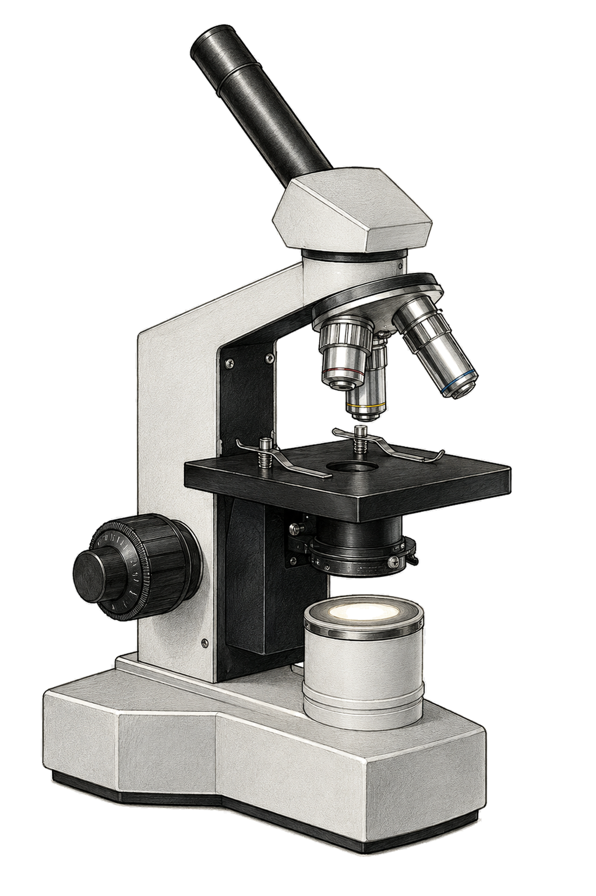

Biologie · Klasse 7 · Gymnasium Niedersachsen
Pflanzen bauen sich ihre Nahrung selbst. Dafür brauchen sie nur Licht, Wasser und ein Gas aus der Luft. Auf dieser Seite schaust du dir zuerst an, wie eine Pflanzenzelle aufgebaut ist. Danach findest du heraus, was in ihr passiert, wenn die Sonne scheint.
Eines der wichtigsten Geräte der Biologen ist das Lichtmikroskop. Es liefert ein stärker vergrößertes und viel genaueres Bild als eine Lupe. Klicke auf einen Punkt in der Zeichnung oder auf einen Begriff in der Liste, um herauszufinden, wofür das jeweilige Bauteil zuständig ist.

0 von 9 Bauteilen entdeckt
Noch nichts ausgewählt
Tippe links in die Zeichnung auf einen Punkt oder auf einen Begriff in der Liste. Hier steht dann, wofür dieses Bauteil zuständig ist.
Ein Lichtmikroskop vergrößert in zwei Schritten: zuerst das Objektiv, dann noch einmal das Okular. Die Gesamtvergrößerung ergibt sich, wenn man beide Zahlen multipliziert. Ein Objektiv mit 40x und ein Okular mit 10x ergeben zusammen eine 400-fache Vergrößerung. Lichtmikroskope schaffen so meist bis etwa 1000- bis 1500-fache Vergrößerung, mehr geht wegen der Wellenlänge des Lichts nicht.
Klicke in der Zeichnung auf ein Zellbestandteil oder wähle einen Begriff aus der Liste. Rechts erscheint, was dieses Teil kann. Schaffst du alle zehn?
0 von 10 Bestandteilen entdeckt
Noch nichts ausgewählt
Tippe links in die Zeichnung oder auf einen Begriff in der Liste. Hier steht dann, wofür dieses Teil in der Zelle zuständig ist.
Drei Dinge findest du nur in der Pflanzenzelle: die feste Zellwand aus Cellulose, die grünen Chloroplasten und die riesige Vakuole. Alles andere, also Zellkern, Zellmembran, Zellplasma, Mitochondrien und Ribosomen, besitzt die Tierzelle auch. Deshalb sieht eine Tierzelle rundlich aus, während Pflanzenzellen eckig wirken und ihre Form behalten.
In den Chloroplasten steckt der grüne Farbstoff Chlorophyll. Er fängt das Sonnenlicht ein. Mit dieser Energie baut das Blatt aus Wasser und Kohlenstoffdioxid den Zucker Glukose. Sauerstoff bleibt dabei übrig und wird abgegeben.
Klicke auf einen Begriff, um ihn in das nächste freie Feld zu setzen. Ein Klick auf ein Feld nimmt den Begriff wieder heraus. Achtung, zwei Begriffe gehören nicht dazu.
In der Oberstufe schreibt man dieselbe Reaktion mit Formeln und passenden Zahlen davor:
Sechs Wassermoleküle und sechs Kohlenstoffdioxidmoleküle ergeben ein Molekül Glukose und sechs Moleküle Sauerstoff. Der Sauerstoff, den du gerade einatmest, stammt übrigens aus dem Wasser, nicht aus dem Kohlenstoffdioxid. Das Licht spaltet die Wassermoleküle auf.
Eine Wasserpflanze steht im Glas. Ziehe den Regler und beobachte, wie viele Sauerstoffbläschen aufsteigen. So haben Forscherinnen und Forscher die Fotosynthese wirklich gemessen: durch Zählen der Bläschen.
Lichtstärke
50 %
Alle Werte in Sauerstoffteilchen pro Minute. Es sind Beispielzahlen für diesen Versuch, keine echten Messwerte.
weiße Bläschen: Sauerstoff, den die Pflanze abgibt blaue Punkte: Sauerstoff, den die Pflanze aus dem Wasser aufnimmt
Die Zellatmung läuft rund um die Uhr, auch tagsüber. Sie verbraucht Sauerstoff und Zucker und liefert der Zelle Energie. Bei Dunkelheit läuft nur sie, deshalb gibt die Pflanze dann Kohlenstoffdioxid ab statt Sauerstoff. Ab einer bestimmten Lichtstärke halten sich Fotosynthese und Zellatmung genau die Waage. Diesen Punkt nennt man Lichtkompensationspunkt. Im Regler liegt er ungefähr bei 12 Prozent. Bei sehr viel Licht steigt die Fotosynthese nicht weiter an, weil Kohlenstoffdioxid und Enzyme zum Begrenzer werden.
Acht Fragen zu allem, was oben steht. Nach jedem Klick siehst du sofort, ob es gestimmt hat.
0 von 8 richtig